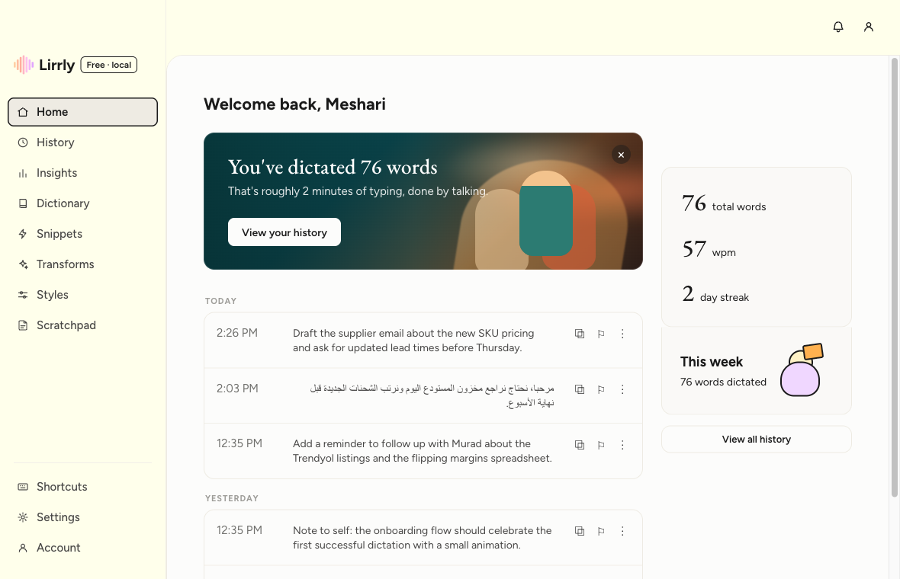
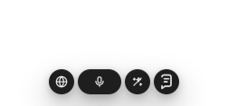

Free & open-source dictation for macOS
Speak.
It’s written.
تكلّم، وخلّ الكتابة علينا.
Press ⌘⇧D in any app and talk. Lirrly turns your voice into clean, polished writing — pasted right where your cursor is.
- Apple Silicon
- macOS 12+
- MIT license
Animated demo: a sentence is dictated with filler words, Lirrly polishes it and pastes the clean version; an Arabic sentence follows, kept in its original dialect.
Three seconds to written.
-
01 Press
⌘⇧D from anywhere on your Mac. No window to find, no app to switch to.
-
02 Speak
Say it how you’d say it. Fillers, false starts, thinking out loud — all fine.
-
03 Pasted
Polished text lands at your cursor. Your clipboard is restored, like nothing happened.
لهجتك… مو الفصحى.
تحافظ ليرلي على كلامك مثل ما قلته — بدون ما تحوّله لفصحى رسمية ولا تكسر جملتك.
- حجازي
- نجدي
- مصري
- شامي
- خليجي
Arabic-first
Dictation tools flatten Arabic into Modern Standard. Lirrly keeps your dialect — Hijazi, Najdi, Egyptian, Levantine — the way you actually talk.
Right-to-left history, dialect-preserving cleanup, and recognition tuned with your own dictionary. Built by a native speaker who was tired of tools that couldn’t keep up.
Private by architecture,
not by promise.
There is no Lirrly server, no account, and no telemetry. The safest data is the data that never leaves.
-
Key in the Keychain
Your API key lives in the macOS Keychain. The interface never sees it — not even once.
-
History stays home
Every dictation is a local file on your Mac. Search it, export it, or delete it — your call.
-
No account. No analytics.
Nothing to sign up for and nothing phoning home. Open the network monitor and check.
-
Audio goes one place
Straight to the transcription engine you configured. Nowhere else, ever.
New in 0.3
Select. ⌥T. Transformed.
Select text in any app — an email, a doc, a chat — press ⌥T, and the active transform rewrites it in place.
Animated demo: a rough sentence is selected and rewritten by transforms — made formal, fixed, or translated to Arabic — in place.
- Rewrite
- Make formal
- Fix grammar
- Summarize
- Translate
…or write your own transform in plain words.
A home for your voice.
History with honest words-per-minute, a personal dictionary that biases recognition, snippets, per-context styles, and insights — all local.


Free as in
actually free.
MIT-licensed and built in the open — read every line that touches your voice. You bring a free Groq API key; there is no plan, no trial, no upsell hiding in a menu.
Being honest about what’s next
- Command mode
- Scratchpad
- Local engine — offline, $0
- Auto-updates
Free, open-source macOS dictation — Arabic-first. Tauri + Rust + React.
Questions, answered.
Is it really free?
Yes — MIT-licensed, no account, no paywall, no “pro” tier. You connect your own free Groq API key for transcription, and that’s the whole economy.
Which languages does it handle?
Everything Whisper is good at: English, Arabic — with dialects preserved — Spanish, French, German, Italian, Portuguese, Hindi, or auto-detect.
Where does my audio go?
From your microphone straight to the transcription engine you configured — Groq today, a local on-device engine on the roadmap. There is no Lirrly server in between, because there is no Lirrly server.
Why do I need a Groq key?
Lirrly has no backend, so you plug in your own key (free at console.groq.com). It’s stored in the macOS Keychain and never shown to the interface again.
Does it run on Intel Macs?
Builds target Apple Silicon on macOS 12 or newer. Intel may compile from source, but it isn’t tested or supported yet.